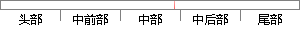

(mel(i，m)) （3-13）
片段位置图

相似结果|
相似片段 1：)lf (b)]一塑 (f (a)》，f (b) Ita) (3-13)可以从式(3-13)中看出，当a和b的Mel对数能量谱值有一微弱的变化时，位于b处的变化对所有DCT系数的影响要远大于a处，因而
相似片段 2：的回推窗长为40ns，门限设定同TC法：MEL算法回推窗长也为40ns，积分时间长度为6ns(CMl)和7ns(CM2)。喜i圣E批(dB)图3-13几种ToA算法的估计误差比较从图3．13(a)可以
相似片段 3：进行归一化，如图3．13所示：图3-13三角带通滤波器组选取滤波器个数为M，每一帧信号的长度为N，并定义最低频率力接近予零，最高频率办为输入音频信号抽样频率R的一半。根据公式3．7和3-8计算出Mel
|
※ 片段修改建议 ※
近似词参考：